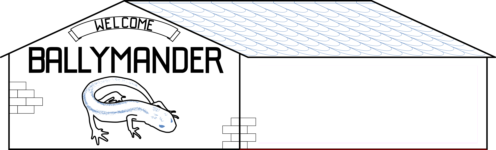

Hover a zone for its figures, and its region's.

Hover a zone for its figures, and its region's.

Select your settings, then press ‘START’ to begin simulating. Alternatively you can select a pre-defined map.
Click a zone on the map to show its region.